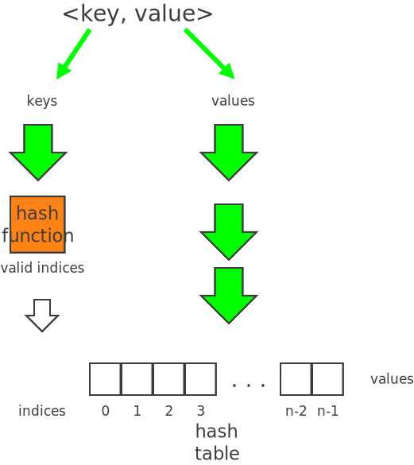
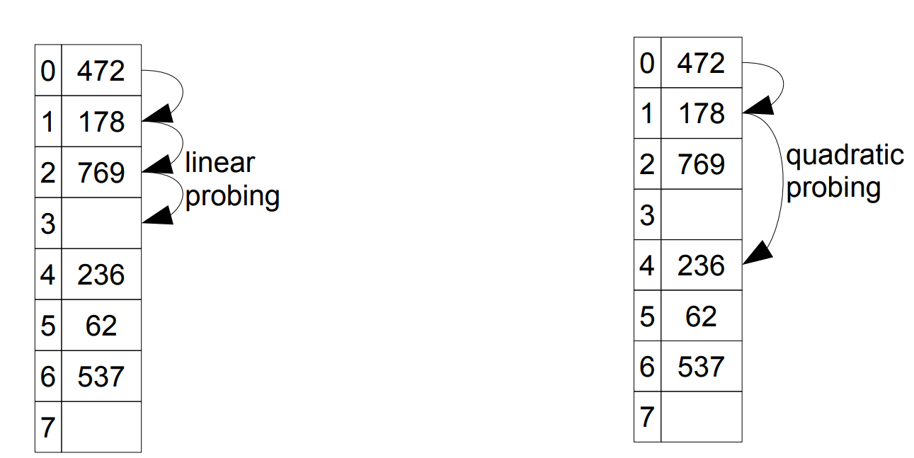

Introduction to Hash Tables
Hash tables are another data structure that we shall briefly discuss which are used for storing large amounts of data in an effective manner. They are a hybrid between arrays and linked lists, and as such inherit the advantages and disadvantages of both. Before we discuss these advantages and disadvantages, we shall try to understand what hash tables are and how they work.
0.1 What is a hash table?
A hash table is a data structure designed to store key value pairs i.e. it has both a key and a value.. Recall how arrays work: a value is stored at a specfic index. The index is always a positive integer, and as a result of the index, it is very quick and straight forward to access the value if you know its index. A hash table is similar because it is a kind of associative array. Instead of having positive integersto identify where a value is stored, hash tables use the key to identify where the value is stored. This means that you can use anything (integer, string, another data type) to identify where the value is stored.
Because it is based on an array, it offers very fast insertions and searching (almost O(1)). This means it is significantly faster than trees, and relatively easy to program. However, on the down side, it means that for best performance, we need to have a good idea of how many items we’ll store, and they are difficult to expand once created.
0.2 So how does any key get mapped to an index?
We’ve said that in the background, a hash table is basically an array with indices. We’ve also said that on the outside, a hash table uses a key to decide which specific location we are dealing with. How? Hash functions. A hash function is a function that is used to convert a key to a valid index value.

For example, if we were using strings as the key, a very basic hash function would be to add numeric values associated with each character.
This simple hash function H can be represented mathematically by the equation
\[ H (Key) = \sum_{c∈Key} f(c) \] \(where f(A) = 1, f(B) = 2, f(C) = 3 … f(Z) = 26\)
hash(CATS) == 43
//given C=3, A=1, T=20, S=19
// therefore CATS = (3+1+20+19) = 43So we would store whatever value was associated with CATS at the 43rd index.Similarly
hash(DOGS) == 45
//given D=4, O=15, G=7, S=19
// DOGS = (4+15+7+19) = 45
//settling once and for all that dogs are better than catsNow one of the reasons this hash function is basic because it allows for an infinite number of indices which we know is not true. If we were just adding the characters of the string in the key, we could get anything from A (which is at index1) to a really large number (think of the longest word – which incidentally has 189,819 letters). This would not work if we had an array with only 1000 positions.
We can solve this issue by restricting its output to the range by doing something like this \[index = sumOfCharacterValues \% range \] or more specifically \[index = 43 \% 1000\]
This essentially hashes any string to a value within our range. Remember you can have any kind of hash function you want as long as it produces a valid index as its output.
1 Collisions
In a perfect world, the hash function would map a unique key to a unique position.Unfortunately, this is rarely the case. There are cases where two different keys will produce the same index when passed through the hash function. This condition is called a collision.
For example, in our hash function from above, the index for SCAT would also be 43. That means that any value associated with SCAT and CATS would potentially be stored in the same location which is not what we want.
There are a couple of ways that we can deal with collisions.
1.1 Open addressing
In the event that you have a collision, open addressing searches the array in a systematic way for an empty cell and then puts that value in the cell. Of course his is just a quick fix with its associated issues.
One way of implementing open addressing is by linear probing where one searches sequentially for the next vacant cell.

One of the disadvantages of this approach is clustering. If there is a common index, then cells next to that index get full really quickly and the data isn’t balanced but clustered. Additionally, as the array gets full, the “clusters” get larger and result in long probe lengths.
Another way of implementing open addressing is by using quadratic probing. This is similar to linear probing except that the step sizes that the system takes to find the next vacant cell grow larger. This reduces the clustering problems associated with linear probing.
For example, if we probed some cell x, with linear probing, the next cells we would probe would be \(x+1, x+2, x+3,....\)
With quadratic probing, the next cells we would probe would be \(x+1, x+4, x+9,...\)
1.2 Separate chaining
Another way to deal with collisions is by combining arrays and linked lists. Each cell doesn’t just contain a value but rather a linked list that could contain any number of values (depending on how many collisions occur). This affects the complexity of insertion as it changes from \(O(1)\) to \(O(m)\) where m is the average number of items in each list.
1.3 Hash functions
To conclude this introduction, we shall discuss the hash function. A hash function should be simple, and quick to calculate/compute. Remember that this function is used for every insertion and therefore it has a huge impact on the actual speed of use of the hash table.
As mentioned before, a perfect hash function would map each key to a unique table location. However, since we don’t live in a perfect world, we’ll settle for a hash function that has a low number of collisions.
See if you can populate the hashtable below with the given keys assuming linear probing with an interval of 1, 3, and quadratic probing.
The hash function h is given by \[h(K)=K \% 10\] Where K is an integer key.
The keys being inserted are \(12, 35, 667, 900, 13474, 75, 82, 95, 102.\)
.png)
Another cool hash function is the mid-square method which calculates the key using the middle r digits of the square of the key. For a hash table of 10 elements, r would be 1. For a table of 100 elements, r would be 2, etc.
E.g. if the key was 667 and r was 2, then \(667^2= 444889\) and the middle 2 digits (and therefore the index) are 48.
Alternatively if the key is 12 and r was 2, then \(12^2= 144\) and the middle 2 digits (skewed to the left) are 14.
Given r = 1, and a hashtable of 10 elements, with the same input keys, fill out the table below.
.png)